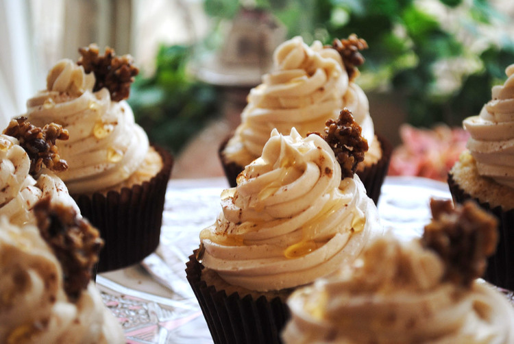

100% Decaffeinated organic. Mild acidity with earthy tones as an espresso and a caramel sweetness should be expected when mixed with milk.
Kaffe
We Serve Coffee
Menu
We roast our coffee onsite daily using 100% Arabica beans that have been ethically sourced from around the world. Our espresso is made from a blend of coffees designed to match the season. The filter coffees on offer are of single origin and have been sought out for their unique flavour characteristics.
From the Coffee Bar
100% Arabica. Exposed to the monsoon winds on the Malabar coast, full bodied, pungent with earthy chocolate.
100% Arabica. Clean cut with citric acidity and light caramel sweetness
From the Bakery
100% Organic Arabica. Sugary sweetness with apple acidity.
Aenean eu leo quam. Pellentesque ornare sem lacinia quam venenatis vestibulum. Nullam id dolor id nibh ultricies vehicula ut id elit.